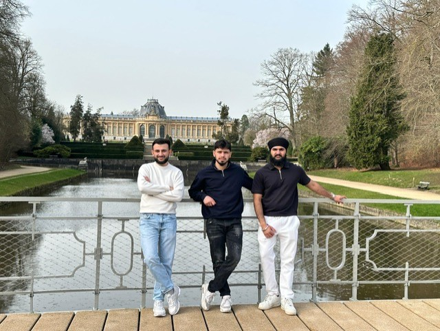

My Reflection
As a kid, I always had a strong imagination. Whenever I didn’t really understand something, I tried to picture it with the things I already knew. That habit never really left me. When I arrived at the park surrounding the museum, my imagination started working immediately. The place was beautiful: long paths, symmetrical buildings, and a calm atmosphere that almost felt unreal. For a moment I even imagined taking a walk there with my girlfriend, just enjoying the quiet and the scenery. Everything felt peaceful.
But that feeling didn’t last long. The moment I stepped inside the museum, I briefly forgot what kind of place it actually was. The reception desk looked neutral and calm, nothing that immediately reminded me of the heavy history connected to this building. Then I noticed the books and the museum map and decided to read a little about why the museum was created. As soon as I understood its origins, the peaceful feeling I had outside slowly faded away. The building was still beautiful, but it felt different. You can admire the architecture, but at the same time you realize that people once stood in this very place who were involved in the colonization of Congo.
What surprised me was that I didn’t immediately feel guilt. Instead, it made me think about how we experience reality. Earlier I mentioned visualization, and that idea came back to me during the visit. Visualization is not the same as reality. It reminded me of something from when I was a teenager. I once saw a news report about a girl who had been sexually assaulted. At that moment the offender hadn’t been caught yet. I understood how terrible it was, but it still felt distant because my mind could only imagine what had happened.
A few days later the offender was arrested and his face appeared on the news. The moment I saw him, everything suddenly felt different. It felt real. I could finally connect a face to the crime instead of imagining some unknown person. That made the situation much more disturbing and much more real.
I experienced a similar moment in the first exhibition room of the museum. There were speakers playing the screams of Congolese people and images showing what had happened during the colonial period and how people reacted to it. Hearing and seeing those things made the history feel much more real. It was no longer just something I knew from books. The audio and visual elements made it easier to connect to the stories, almost like putting a face to the history. Suddenly the past felt closer and more human.
Not everything in the museum was heavy, though. One part that really fascinated me was the animal section. Many of the animals were displayed in their real size. I had never stood close to animals like a giraffe before, so seeing that its legs alone were taller than me was incredible. The hippos were huge as well. That part of the museum was genuinely fascinating to see.
In terms of history, many of the facts were things I already knew: how Congo was colonized, the resources that were taken, and the suffering people endured. But walking through a museum like this makes you think about those things in a different way. Your brain starts working differently, and your thoughts become more intense. Even if you think you already understand the history, experiencing it through images, sounds, and stories can make you look at it from a new perspective.
My Visit
